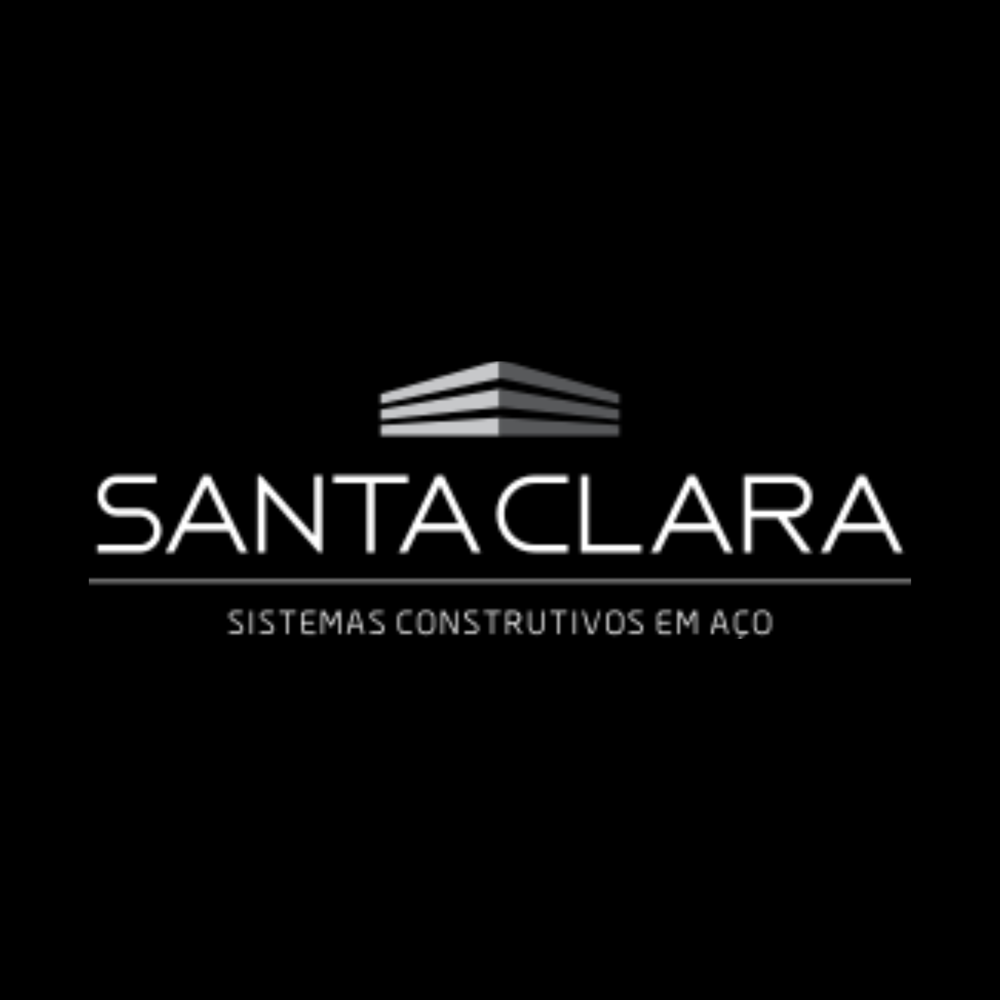
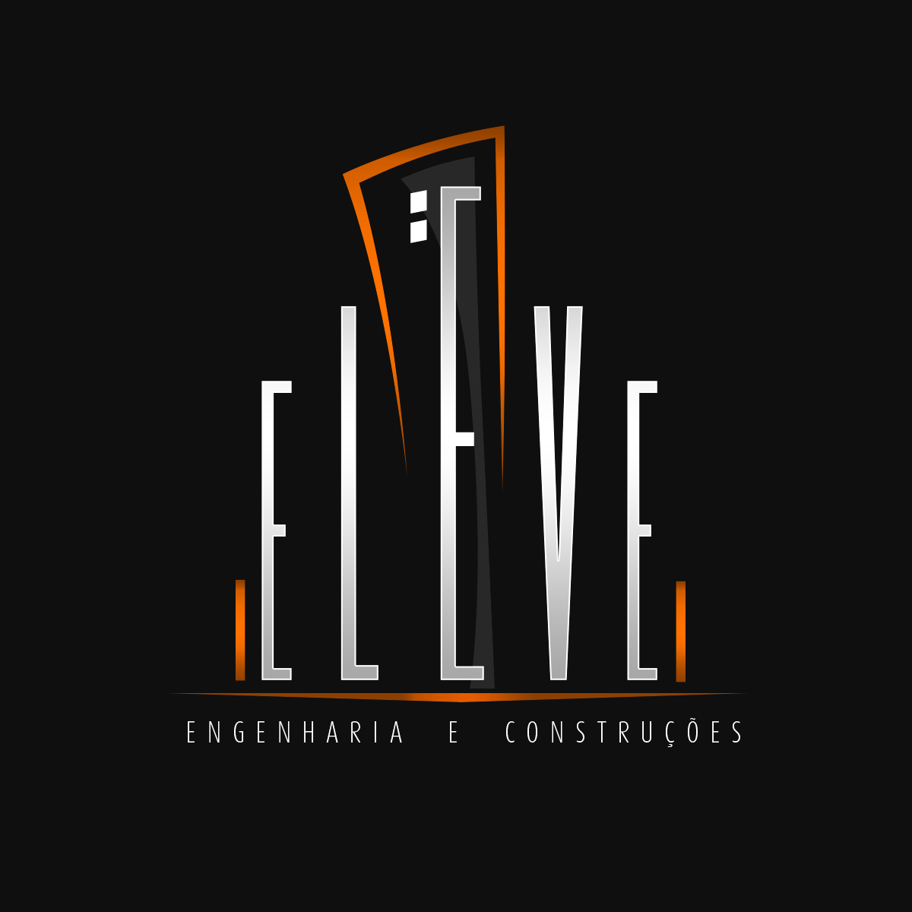
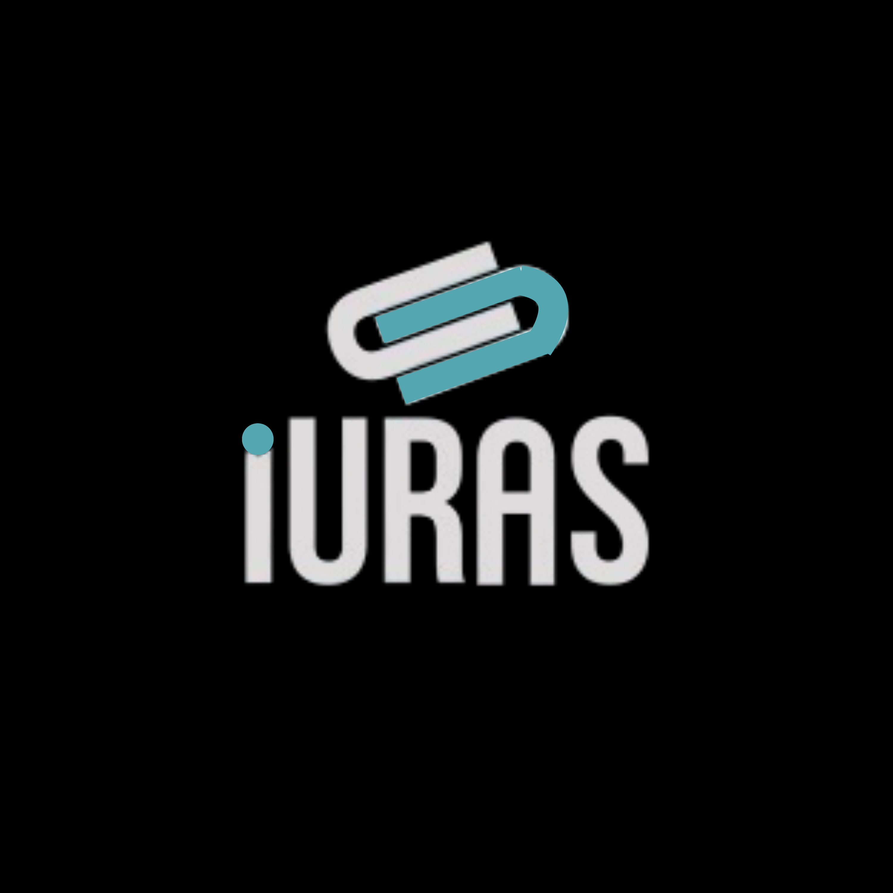
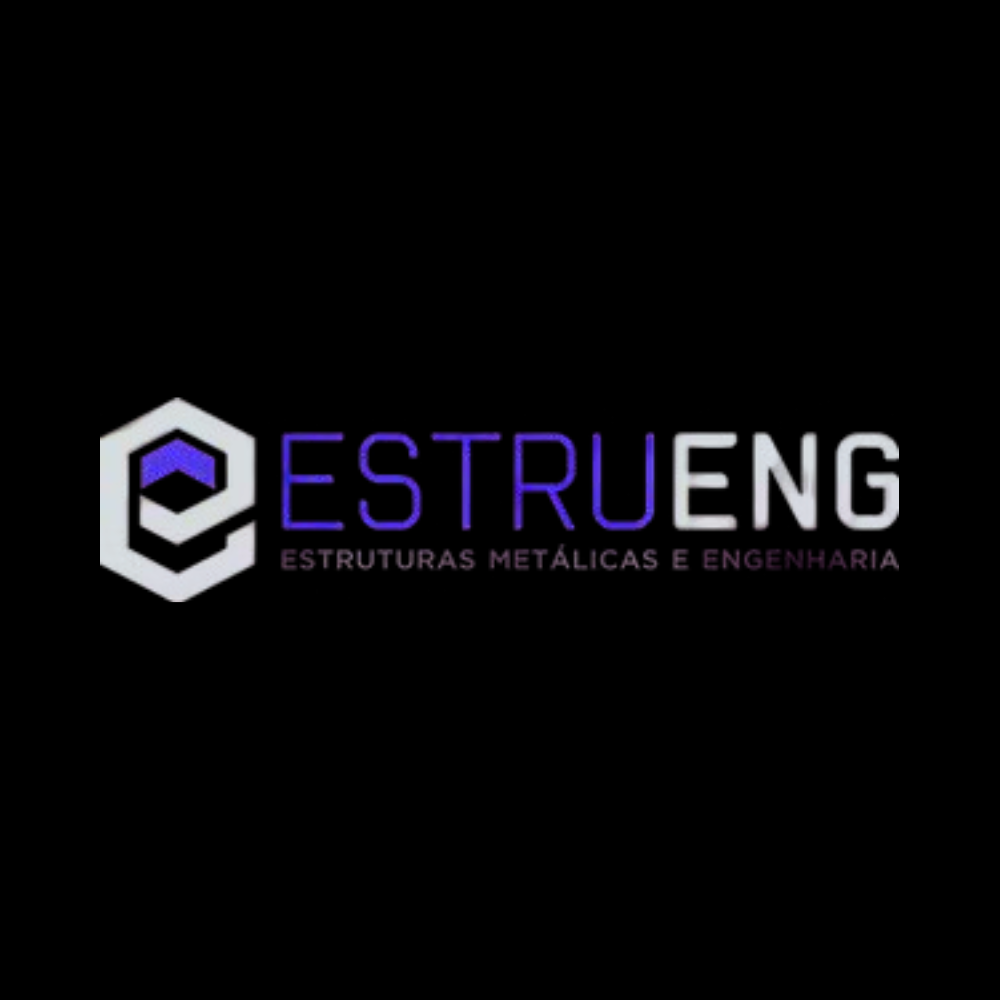
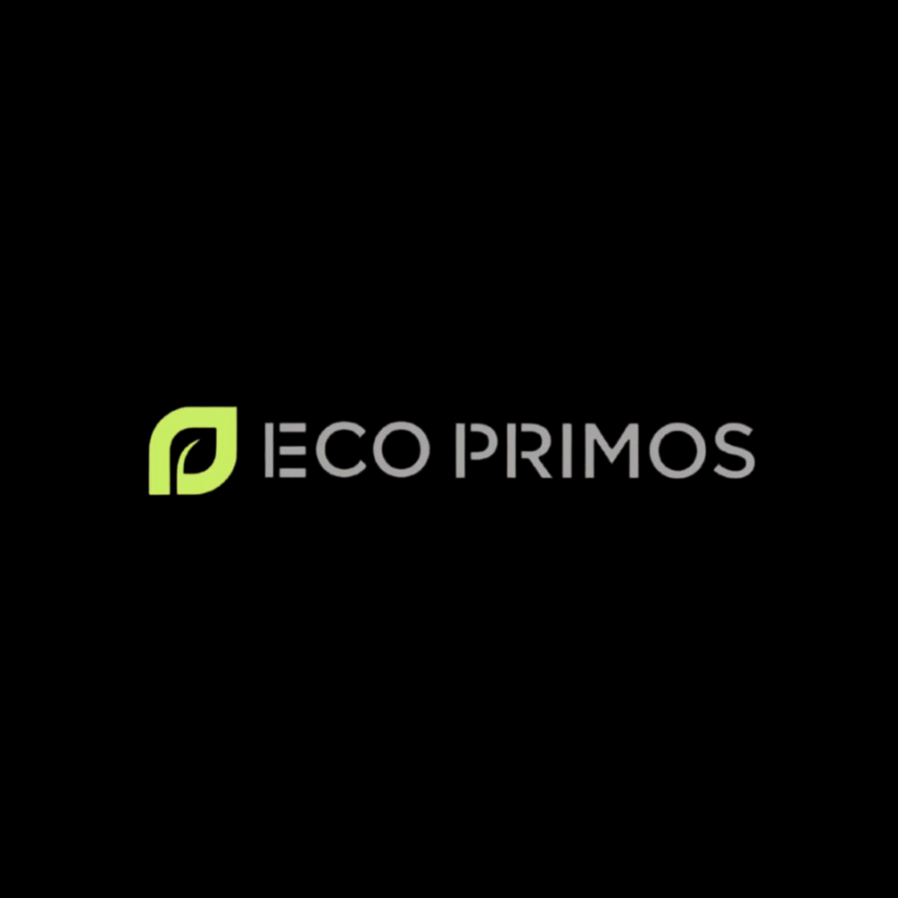
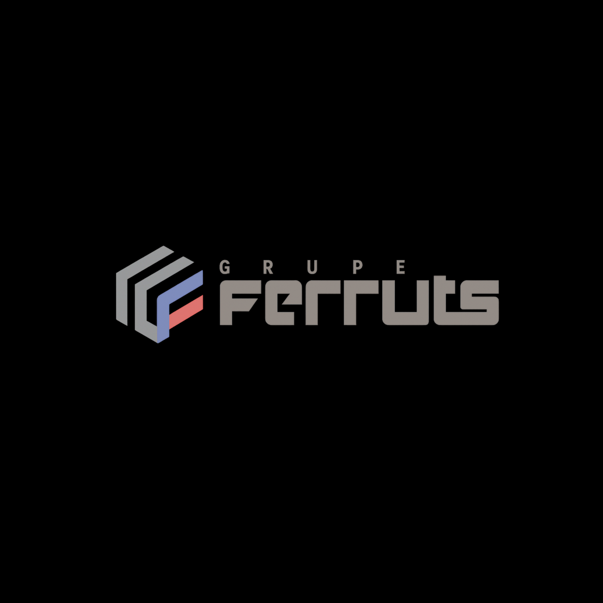

Nossa história
A EstruMac, com sede própria em Araras-SP, nasceu do sonho do engenheiro civil Auredson Maciel de transformar estruturas metálicas em soluções robustas, seguras e duradouras.
A ideia da empresa surgiu em 2010, quando Auredson vislumbrou a oportunidade de criar uma empresa focada em excelência em estruturas metálicas. Em 27 de julho de 2015, a EstruMac foi oficialmente fundada e, desde então, vem se consolidando como referência no setor, destacando-se pela excelência técnica, cumprimento de prazos e inovação em cada projeto.
Mais do que fornecer estruturas metálicas, a EstruMac entrega precisão, confiabilidade e valor agregado em cada obra.
Nossa missão
A EstruMac busca ser referência no mercado de estruturas metálicas, superando expectativas de clientes, colaboradores e parceiros.
Nossa missão é unir excelência técnica, inovação constante e resultados sustentáveis, garantindo soluções seguras e eficientes.
Valorizamos confiança, transparência e aprendizado contínuo, consolidando nossa posição como parceiro estratégico e líder no setor.
Nosso objetivo
Consolidar-se como referência no mercado de estruturas metálicas, reconhecida por superar expectativas de clientes e colaboradores.
Destacar-se pela excelência em produtos e serviços, compromisso com resultados sustentáveis e busca contínua por inovação e aprimoramento.
Nosso Processo
Entregamos a inteligência por trás da obra. Você cuida da fabricação e montagem, nós cuidamos de todo o resto.
Cálculo & Projeto Básico
Dimensionamento estrutural avançado e elaboração do projeto básico.
Modelagem & Detalhamento
Modelagem 3D detalhada (BIM) e detalhamento de cada peça estrutural.
Entrega Técnica
Envio de toda a documentação para que você execute a fabricação e montagem.
O que fazemos?
Soluções robustas, seguras e duradouras para o seu projeto.
Alguns dos nossos trabalhos
Tradição e Excelência
Desde 2015, a EstruMac transforma desafios estruturais em realidade, unindo segurança e inovação em cada metro de estrutura metálica.
Nossos Parceiros de Confiança
Trabalhamos com as melhores empresas do setor, unindo excelência técnica e segurança em cada projeto.






O que dizem nossos clientes
"A EstruMac entregou nosso galpão no prazo e com uma precisão técnica impressionante. Recomendo fortemente!"
Eng. Ricardo Silva
"Equipe extremamente qualificada. O cálculo estrutural nos trouxe uma economia real de materiais sem perder a segurança."
André Almeida
"Profissionais sérios e comprometidos. A gestão da obra foi impecável do início ao fim."
Marcos Oliveira
Gerenciamento
Liderança técnica e compromisso com a excelência.
Auredson Maciel
CEO & FundadorAuredson Maciel é engenheiro civil e idealizador da EstruMac. Ele fundou a empresa com o compromisso de trazer soluções inovadoras, seguras e de alta precisão técnica em estruturas metálicas. Sob sua liderança, a EstruMac consolidou-se como referência de qualidade e eficiência no mercado.
Dúvidas Frequentes
Entenda por que a EstruMac é a escolha certa para o seu projeto. Reunimos aqui as principais informações técnicas para ajudar na sua decisão.
Ainda tem dúvidas?
Nossa equipe técnica está pronta para analisar seu projeto específico.